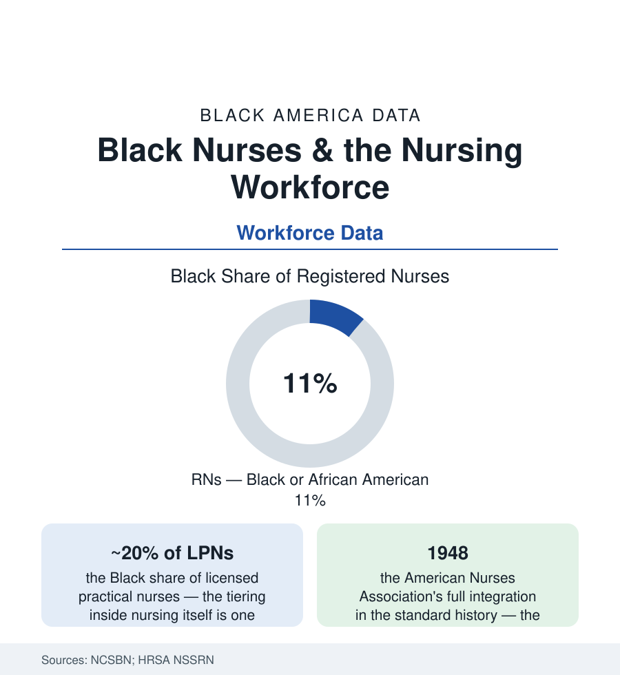

Black Employment
Black Nurses: The Backbone Profession's Own File
Nursing is America's largest health profession, and Black nurses — about 11% of RNs and a fifth of LPNs — carry its history from the segregated training schools to the charge desk. The workforce data.

Nursing is the largest health profession in America — over three million registered nurses — and its Black workforce carries a complete institutional history of its own: the segregated training schools that produced generations of nurses the white hospitals would train but not always hire, the separate professional association that held the field for forty years, and a present-day workforce (about eleven percent of RNs in the national surveys, roughly a fifth of LPNs and a larger share of nursing assistants) whose tiering inside the profession still maps the old gradients. This article reads nursing's file.
The Training Schools and the Separate Association
The profession's Black history begins with its schools: the hospital training programs attached to the Black hospital system (Provident of Chicago's school from 1891 among the first; Freedmen's, Tuskegee's, Hampton's, Meharry's and Harlem's schools in the record — over a hundred Black nursing schools across the era in the historians' counts, their graduates staffing the Black hospitals and the public-health services of the segregated South) — and its association: the National Association of Colored Graduate Nurses, founded 1908 under Martha Minerva Franklin, carrying Black nurses' professional interests (the military-nurse fight of both world wars in its record — the Army Nurse Corps' quota on Black nurses lifted only under wartime pressure in 1945 in the standard accounting; the Navy's first Black nurses the same era) until the ANA's integration made merger honorable in 1951, the NACGN dissolving itself into the integrated body as its final act. The schools' later history runs with the hospitals' (the closures of the integration era taking the training programs with them — the pipeline narrowing the counts registered for a generation), and their successor (the HBCU nursing programs and the community colleges' ADN factories of the modern pipeline) inherited the file.
The Modern Workforce: Tiers Within the Profession
The NCSBN and HRSA surveys let the current profession be drawn precisely: RNs about eleven percent Black; the advanced-practice tier (nurse practitioners roughly eight to nine percent Black in the recent counts, nurse anesthetists thinner, midwives thinnest against the Black maternal-health file's needs); LPNs near a fifth Black; nursing assistants and home-health aides — the hands-on care workforce of the aging file — at roughly a third or more, majority women of color in the PHI workforce data. The wage ladder prices the tiers exactly (the aide's median in the high teens of dollars per hour in the BLS tables against the RN's professional salary — the same ward, the same patients, a threefold gradient sorted visibly by race and credential in the staffing data). The setting data add the safety-net signature of the whole section: Black nurses over-represented in hospitals and long-term care, in the public and safety-net systems, in the home-health and hospice tier — the care of the oldest and poorest patients in the system's own assignments. The education pipeline's current data hold the hopeful line and the leak in one table: Black students at roughly twelve to fourteen percent of baccalaureate nursing enrollments in the AACN counts (nursing among the more representative health pipelines), with attrition and the NCLEX pass-rate gaps (the licensure file's own disparities, the exam's recent redesign partially a response to its measurement literature) taxing the flow.
Practice, Leadership, and the Current Fights
The leadership tier repeats the gradient at management altitude: Black chief nursing officers and hospital executives in the low single digits in the association counts, nursing-school deans and faculty similarly (the faculty shortage's demographics in the AACN data — the doctorally prepared Black nurse faculty a population the pipeline studies count in the hundreds against the profession's teaching needs), and the professional associations' presidencies integrating across the recent decades in the record. The practice fights in the current data are the profession's general ones at Black scale: the staffing ratios and the mandatory-overtime ledgers (the post-pandemic exodus data — the experienced-nurse losses concentrated where the assignments were heaviest), the workplace-violence statistics (the care workforce's injury rates in the BLS data, the aides' the highest), the travel-nurse economy's wage shock and its settling, and the scope-of-practice expansions (the APRN full-practice-authority map — the maternal and primary-care deserts of the health file being staffed, where they are staffed, substantially by the nurse practitioners this state-by-state fight licenses). The National Black Nurses Association (founded 1971) stands in the record as the profession's Black institution of the modern era — its chapters, its scholarship funds, its seat at the policy tables the merged association's history made necessary to keep.
Reading the Nursing Data
Eleven percent of the largest health profession, a fifth of its practical tier, a third of its aides — nursing's file is the care economy's own pyramid, climbed by the descendants of women the profession once trained in separate schools to nurse a segregated country. The wards run on their hands tonight, at every tier of the ladder at once. The data simply insist on seeing the whole ladder in one frame.
More in Black Employment
The Black Unemployment Rate: The Two-to-One Pattern
Black unemployment runs at roughly twice the White rate — 5.5 percent against 3.3 percent in annual averages — a ratio stable across five decades of federal data. How it is measured and why it persists.
Black Median Weekly Earnings: The 80-Cent Ratio
Black full-time workers earn a median of about $900 a week — roughly 80 cents for every dollar White workers earn. The BLS earnings data by group, gender, and occupation.
Black Labor Force Participation: Working at National Rates
Black labor force participation runs at roughly the national rate — and Black women participate at higher rates than White women. The BLS participation data.
Source: National Council of State Boards of Nursing workforce studies; HRSA National Sample Survey of Registered Nurses; American Nurses Association; U.S. Bureau of Labor Statistics.